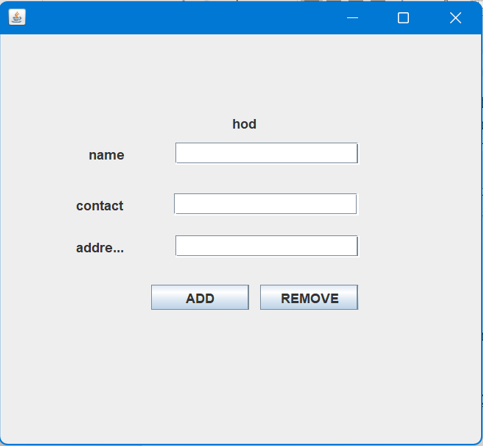
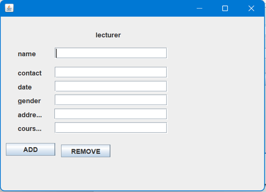
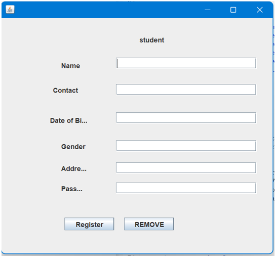
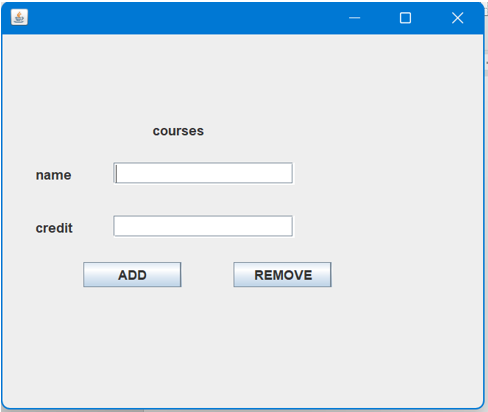
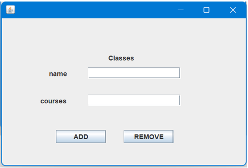
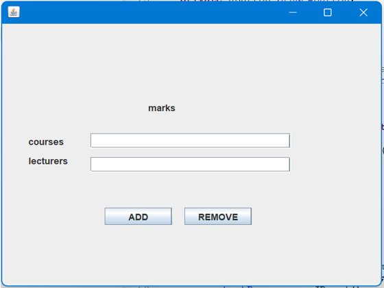

Database name: student_marks_management_system
HOD table works as an admin of the system he/she grant any one the access of doing something on the system..
The Class table stores information about the classes or sections within the institution. Fields might include Class ID, Class Name, Department, Year, and possibly other details. This table helps in organizing students into specific classes or groups for their courses and examinations. .
Course table holds information about the courses offered by the institution. Fields could include Course ID, Course Name, Credits, Department, Semester, and other relevant details. It serves as a repository for course details, including prerequisites, descriptions, and the faculty assigned to teach each course.
The Student table holds information about the students enrolled in the institution. Fields in this table might include Student ID, Name, Address, Phone Number, Email, Class ID (foreign key), and other relevant details. It is the central repository for student information including personal details, enrollment status, and academic progress.
The Lecturer table contains details about the teaching staff or faculty members. Fields might include Lecturer ID, Name, Department, Contact Information, and possibly login credentials. This table helps in assigning courses to lecturers, managing their schedules, and tracking their teaching assignments.
The Marks table is crucial for storing student assessment data. Fields might include Student ID (foreign key), Course ID (foreign key), Marks Obtained, Total Marks, Grade, Semester, and other relevant details. This table allows for the recording and tracking of student performance in various courses and semesters.
Eclipse IDE: an integrated development environment used in computer programming. It contains a base workspace and an extensible plug-in system for customizing the environment. It is the second-most-popular IDE for Java development, and, until 2016, was the most popular.
Provides administrative access to overseeing student records, marks, courses, and classes within a department.
Allows the HOD to view reports, statistics, and analytics on student performance.
Records information about lecturers such as ID, name, contact details, and courses they teach.
This form is used to manage student information.Typically includes fields such as student ID, name, contact information, and any other relevant details.
Editing existing course details such as name, code, description, and associated lecturer. May include functionalities to delete courses if they are no longer offered.
Assigns students to specific classes or groups based on their academic program, year, or other criteria. Allows creation, editing, and deletion of class information.
Provides a platform for entering marks obtained by students in various assessments such as exams, quizzes, assignments, etc. Typically includes fields for student ID, course ID, marks obtained, maximum marks, assessment type, and date. Enables viewing, editing, and deleting of marks entered.
How They Work Together: Interaction: These forms interact with each other to create a comprehensive system: Student Form and Lecturer Form connect when assigning lecturers to students or classes. Courses Form is linked with Classes Form to assign courses to specific classes. Marks Form interacts with Student Form, Courses Form, and Classes Form to record and manage student marks for specific courses and assessments. HOD Form oversees and manages the entire system, ensuring smooth functioning and effective utilization of resources within the department.